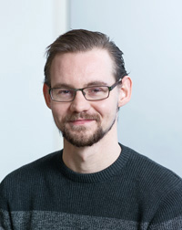

Eighth Symposium on Compositional Structures (SYCO 8)Tallinn University of Technology, Tallinn, Estonia |
We are closely monitoring the coronavirus situation in Estonia. In case of a lockdown or severe travel restrictions, we will move the meeting online.
The Symposium on Compositional Structures is a series of interdisciplinary meetings aiming to support the growing community of researchers interested in the phenomenon of compositionality, from both applied and abstract perspectives, and in particular where category theory serves as a unifying common language. We welcome submissions from researchers across computer science, mathematics, physics, philosophy, and beyond, with the aim of fostering friendly discussion, disseminating new ideas, and spreading knowledge between fields. Submission is encouraged for both mature research and work in progress, and by both established academics and junior researchers, including students.
Submission is easy, with no format requirements or page restrictions. The meeting does not have proceedings, so work can be submitted even if it has been submitted or published elsewhere. You could submit work-in-progress, or a recently completed paper, or even a PhD or Masters thesis.
While no list of topics could be exhaustive, SYCO welcomes submissions with a compositional focus related to any of the following areas, in particular from the perspective of category theory:
- logical methods in computer science, including classical and quantum programming, type theory, concurrency, natural language processing and machine learning;
- graphical calculi, including string diagrams, Petri nets and reaction networks;
- languages and frameworks, including process algebras, proof nets, type theory and game semantics;
- abstract algebra and pure category theory, including monoidal category theory, higher category theory, operads, polygraphs, and relationships to homotopy theory;
- quantum algebra, including quantum computation and representation theory;
- tools and techniques, including rewriting, formal proofs and proof assistants, and game theory;
- industrial applications, including case studies and real-world problem descriptions.
This new series aims to bring together the communities behind many previous successful events which have taken place over the last decade, including Categories, Logic and Physics, Categories, Logic and Physics (Scotland), Higher-Dimensional Rewriting and Applications, String Diagrams in Computational, Logic and Physics, Applied Category Theory, Simons Workshop on Compositionality, the Yorkshire and Midlands Category Theory Seminar and the Peripatetic Seminar in Sheaves and Logic.
This event follows SYCO 1 in Birmingham, SYCO 2 in Strathclyde, SYCO 3 in Oxford, SYCO 4 in California, SYCO 5 in Birmingham, and SYCO 6 in Leicester. It replaces SYCO 7 which was cancelled due to the pandemic.
Invited speakers
|  |  |
| John van de Wetering | Christine Tasson |
| Radboud University Nijmegen | Sorbonne Université |
Accepted papers
- Stefan Zetzsche, Gerco van Heerdt, Matteo Sammartino and Alexandra Silva, Canonical automata via distributive law homomorphisms
- Simon Henry and Nicholas Meadows, Higher Theories and Monads
- Paulina Goedicke and Jamie Vicary, A Category Theoretical Description of Block Designs and Quantum Designs
- Vincent Wang-Mascianica and Bob Coecke, Talking Space: Inference from spatial linguistic meanings
- Lukas Heidemann, Frames in pretriangulated dg-categories
- Elena Di Lavore, Wilmer Leal and Valeria de Paiva, Dialectica Petri nets
- George Kaye, Dan R. Ghica and David Sprunger, Normalisation by evaluation for digital circuits
- Guillaume Boisseau and Robin Piedeleu, Graphical Piecewise-Linear Algebra
- Liliane-Joy Dandy, Emmanuel Jeandel and Vladimir Zamdzhiev, Qimaera: Type-safe (Variational) Quantum Programming in Idris
- Matt Wilson and Augustin Vanrietvelde, Composable constraints
- Davide Trotta, Matteo Spadetto and Valeria de Paiva, Dialectica Logical Principles
- Simon Fortier-Garceau, Interventions and Counterfactuals for Categorical Models of Causality
- Vikraman Choudhury, Weighted sets and modalities
- Elena Di Lavore and Pawel Sobocinski, Monoidal width
- Dylan McDermott and Alan Mycroft, On the relation between call-by-value and call-by-name
- Olivier Peltre, Homological algebra for message-passing algorithms
Important dates
All deadlines are 23:59 anywhere-on-earth on the given dates.
- Submission deadline: Monday 25 October 2021
- Author notification: Wednesday 3 November 2021
- Registration: To be announced
- Symposium dates: Monday 13 and Tuesday 14 December 2021
Schedule
To be announced.Registration
To be announced.
Local information
To be announced.
Sponsorship
To be announced.
Deferral
The intention is for SYCO to be a community meeting, where people have enough time to explain their ideas, and with a friendly and non-competitive atmosphere. To encourage this, in the event that more submissions are received of an acceptable standard than can be accommodated in the timetable, the programme committee may choose to defer some submissions to a future meeting, rather than reject them. This would be done based largely on submission order, giving an incentive for early submission, but would also take into account other requirements, such as ensuring a broad and inclusive scientific programme. Deferred submissions can then be re-submitted to any future SYCO meeting, where they will be prioritised for inclusion in the programme, and where they will not need to be re-reviewed. Meetings are held sufficiently frequently to avoid a backlog of deferred papers.
Submissions
Submission is by EasyChair, via the SYCO 8 submission page.
Submissions should present research results in sufficient detail to allow them to be properly considered by members of the programme committee, who will assess their interest to the SYCO community. We encourage the submission of work in progress, as well as mature results. There are no proceedings, so work can be submitted even if it has been previously published, or has been submitted for consideration elsewhere. There is no specific formatting requirement, and no page limit, although for long submissions authors should be aware that reviewers will not be able to read the entire document in detail. Think creatively—you could submit a recent paper, draft notes of a project in progress, or even a recent Masters or PhD thesis.
If you have a submission which was deferred from a previous SYCO meeting, it will not automatically be considered for SYCO 8; you still need to submit it again through EasyChair. Such a submission will be prioritised for inclusion in the SYCO 8 programme. When submitting, append the words "DEFERRED FROM SYCO X" to the title of your paper, replacing "X" with the appropriate meeting number. There is no need to attach any documents.
Programme committee
- Ross Duncan, University of Strathclyde
- Alexandre Goy, MICS, CentraleSupélec
- Amar Hadzihasanovic, Tallinn University of Technology
- Jules Hedges, University of Strathclyde
- Chris Heunen, University of Edinburgh
- Aleks Kissinger, University of Oxford
- Jade Master, University of Strathclyde
- Dan Marsden, University of Oxford
- Hector Miller-Bakewell
- Samuel Mimram, École Polytechnique
- Koko Muroya, Kyoto University
- Simona Paoli, University of Aberdeen
- Mehrnoosh Sadrzadeh, University College London
- Maru Sarazola, Johns Hopkins University
- Pawel Sobocinski, Tallinn University of Technology
- Christina Vasilakopoulou, University of Patras
- Jamie Vicary, University of Cambridge
- Maaike Zwart, IT University of Copenhagen (chair)
Steering committee
The symposium is managed by the following people. If you have a general question about SYCO, or if you want to propose to host a future version, please get in touch with a member of the steering committee.- Ross Duncan, University of Strathclyde
- Chris Heunen, University of Edinburgh
- Dominic Horsman, University of Grenoble
- Aleks Kissinger, University of Oxford
- Samuel Mimram, École Polytechnique
- Simona Paoli, University of Aberdeen
- Mehrnoosh Sadrzadeh, University College London
- Pawel Sobocinski, Tallinn University of Technology
- Jamie Vicary, University of Cambridge